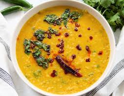

Recipe of tasty Dal Fry

The Recipe of Dal Fry
Dal fry is a popular Indian lentil dish that is known for its rich, creamy texture and aromatic spices. The word "dal" refers to a variety of lentils, while "fry" indicates that the dish is cooked in a pan with oil or ghee. Dal fry is often served with rice, roti, or naan.
Ingredients
- 1 cup yellow lentils (urad dal)
- 1 onion, finely chopped
- 2 cloves garlic, minced
- 1 inch ginger, grated
- 1 teaspoon cumin seeds
- 1/4 cup vegetable oil or ghee
Steps
- Prep the lentils: Rinse the lentils thoroughly under cold water. Place them in a pot with water and bring to a boil. Reduce heat and simmer for 20-25 minutes, or until the lentils are soft but not mushy.
- Add spices: Stir in coriander powder, turmeric powder, red chili powder, and garam masala. Cook for 30 seconds, stirring constantly.
- combine ingredients: Add the cooked lentils to the pan with the spices. Pour in water and bring to a simmer. Cook for 5-10 minutes, or until the dal reaches your desired consistency.
- Season and serve: Season with salt to taste. Garnish with fresh cilantro leaves. Serve hot with rice, roti, or naan.